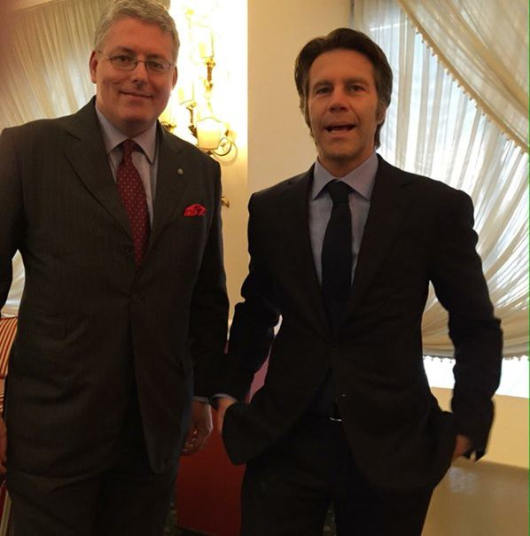
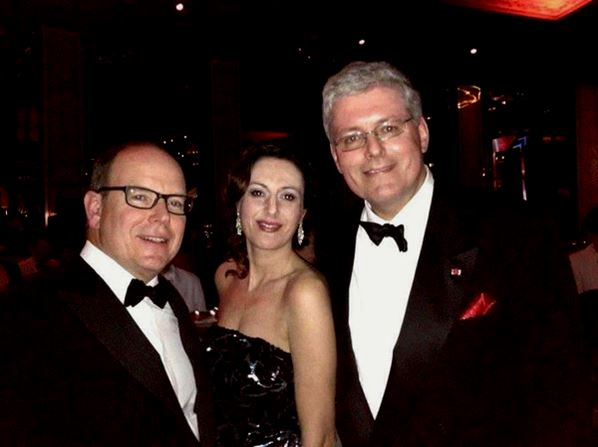
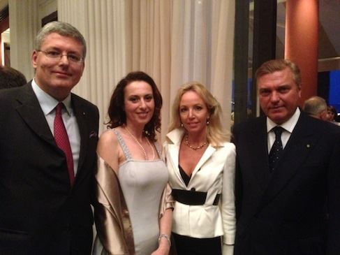
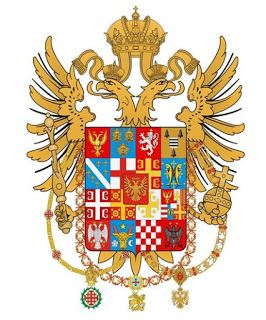
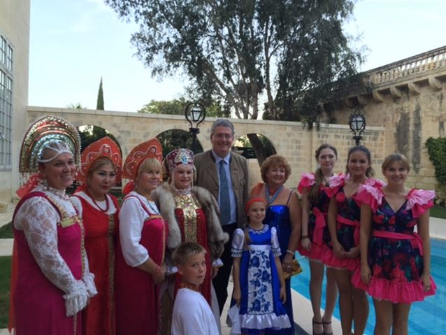

Vatican, en Italie, à Monaco et dans de nombreux autres pays du monde, le Prince Stefan Cernetic1 est bienvenu et reconnu comme Son Altesse royale et impériale, descendante de S. Constantin le Grand et de l'empereur de Constantinople Angelo, Comneno, Ducas, Paleologo, Lascaris, Vatatze. Né en1960 à Trieste (Italie), il est ainsi reconnu comme Prince Impérial et Royal du Monténégro, Macédoine, Serbie, Albanie et de Voïvodine.

Le Prince Stefan Cernetic avec le Prince Emmanuel Philibert de Savoie

… et avec le Prince de Monaco
La famille est d’origine Hongroise. Elle est issue d’une maison des plus antiques et éminente de la noblesse de Belgrade, qui a fourni au fil des siècles des ministres, ambassadeurs, officiers et de nombreux intellectuels. Des membres de cette famille sont de noblesses helléniques de la Macédoine grecque et descendent de la maison Impériale de Constantine.
Leurs titres de noblesse et blason ont été reconnus par l’Impératrice Marie-Thérèse d’Autriche avec lettres patentes en 1751.
Orthodoxe pratiquant, Stefan Cernetic est désormais le gardien de l’héritage chevaleresque de sa maison et continue, à ce titre, de faire valoir les valeurs de cet héritage.

Avec le prince Charles et la princesse Camilla de Bourbon-Deux-Siciles, duc et duchesse de Castro
D'un passé glorieux mais propulsé vers l'avenir, portant sur des valeurs sans lesquelles le présent n'a pas de racines, Son Altesse Stefan Cernetic est protecteur de plusieurs ordres dynastiques dont l’Ordre équestre constantinien de Saint-Georges et d’autres ordres chevaleresques tels que The Impérial Equestriam Orthodox of Saint Umberto et The Impérial Equestriam Tchernetich Order of Chivalry.
Avec le Patriarche orthodoxe d’Alexandrie, Sa Sainteté Theodor IID’aucuns connaissant un peu l’Ordre Constantinien de Saint Georges pourront s’interroger sur ce protectorat de la famille Cernetic, celui de la famille Bourbon étant plus souvent invoqué et connu du grand public. Néanmoins, ce protectorat a été reconnu par plusieurs jugements de tribunaux italiens :
« Il Tribunale per esse esposto ecc. Ecc. (Dalla Sentenza della IV Sezione del Tribunale Civile de Napoli il 28 maggio 1947 - trattante dei vari rami, delle varie branche degli Ordini Costantiniani) - omissis -" le quali tutte ed altre possono considerarsi legittime Compatrone dello stesso ordine (cioè del complesso Costantiniano). »
Ciò non significa che Ordini Costantinien di San Giorgio venez quelli di collazione della Real La maison Borbone non siano legittimi et ambiti, signifiant solo che partendo l'Ordine Costantiniano dall'Imperatore Costantino il Grande et proseguendo nelle varie Dinastie Bizantine, storicamente abbiamo, prima dei Borbone Ed oltre i Borbone, diversi altri Costantiniani, storicamente esistiti ed egualmente legittimi.
Les tribunaux italiens, notamment celui de Naples en 1947, reconnaissent la légitimité du protectorat Cernetic tout en reconnaissant également celles des deux branches des Bourbon qui aujourd’hui encore protègent cet ordre ancestral.
Le tribunal reconnaît alors que l'Ordre Constantinien de Saint-Georges, initié par l'Empereur Constantin le Grand, a perduré à travers les siècles et diverses dynasties byzantines.
Celui-ci est aujourd’hui sous le protectorat de plusieurs dynasties mais elles apparaissent historiquement toutes aussi légitimes, la branche Cernetic étant plus spécifiquement orthodoxe.
Cérémonie de ratification du protocole d'accord entre la Maison Impériale et Royale Cernetic du Monténégro, de Serbie, d'Albanie et de Voïvodine et l'Association papale des Chevaliers de Saint Sylvestre

Son Altesse avec les Ballets russes à Malte
Stefan Cernetic est polyglotte et parle couramment le serbe, l’anglais, le français, l’Italien, l’espagnol, l’allemand et le russe. Professeur en politique et relations internationales, Son Altesse intervient ponctuellement dans différentes universités mais il est également Directeur et journaliste professionnel du magazine en ligne « Gotha Del Gusto ». Malgré une vie professionnelle bien remplie, les activités de Son Altesse sont plus occupées encore par son engagement caritatif et humanitaire. Ambassadeur de bonne volonté en Monaco, il est également, et surtout, ambassadeur de l’ICDO (Organisation de Défense passive Internationale - Genève). Cette organisation humanitaire, basée à Genève, est en charge de la protection de la population et de l’environnement. Reconnue par 56 nations souveraines, elle compte plus de deux millions de collaborateurs dans le monde.
Conscient de la noble charge que représente son héritage familial et soucieux de préserver le rayonnement de cette grande famille, le prince Stefan Cernetic n’en ai pas moins à attentif à son siècle et, par son engagement caritatif, démontre que les valeurs de la noblesse ne sont pas mortes avec le XXème siècle.
M.A.
1Stéphan Tchernetich, Tchernetitch, Crnojevic selon l’orthographe des pays.

Partager cette page